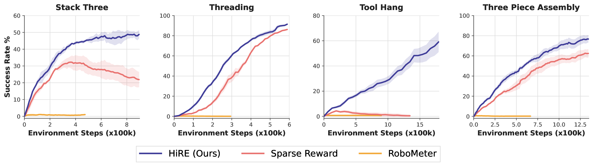
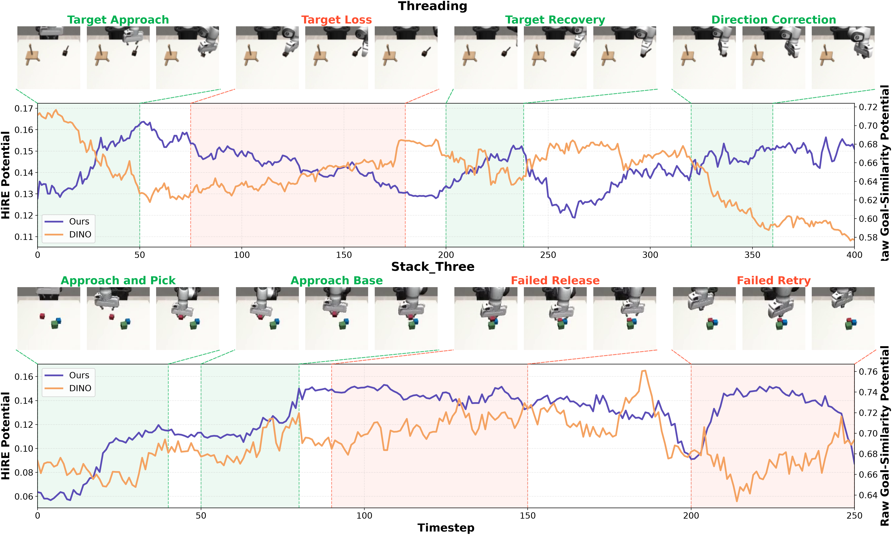
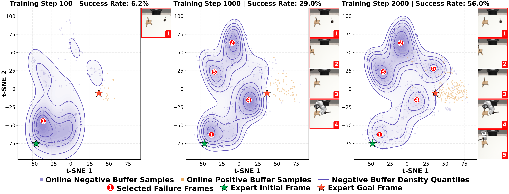
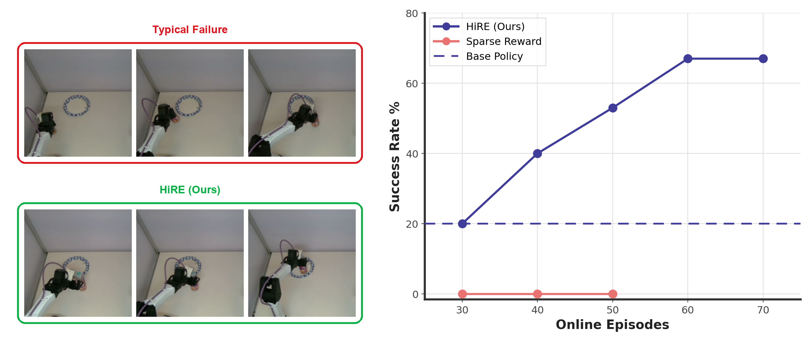
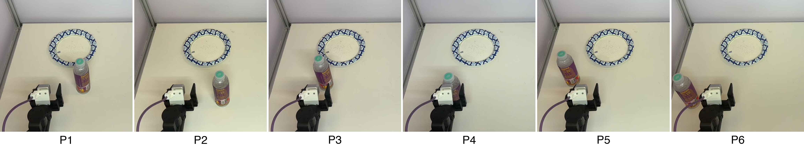
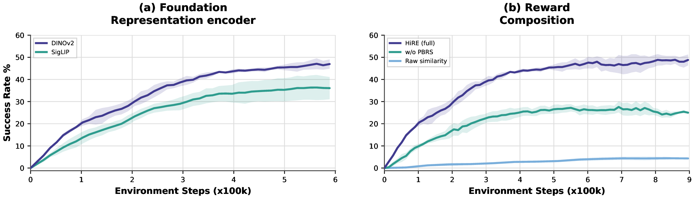
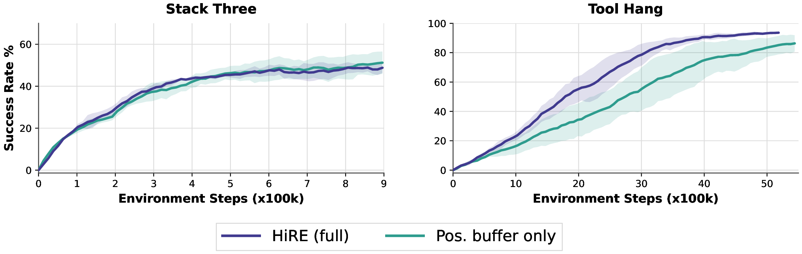

Following maximum-entropy inverse RL, the ideal control-aware reward is the log-density ratio between success and failure states:
\[ R^*(s) = \log p_{+}(s) - \log p_{-}(s) \]
Instead of training a discriminator, HiRE estimates both densities non-parametrically in a frozen foundation representation space (e.g. DINOv2, SigLIP), using von Mises–Fisher kernel density estimation over a positive buffer \(\mathcal{B}^+\) (successful rollouts and expert frames) and a negative buffer \(\mathcal{B}^-\) (terminal frames of failed rollouts) collected during finetuning. This yields a closed-form, training-free potential:
\[ \Phi_{\text{HiRE}}(s) = \mathbb{L}^{\kappa^+}_{\mathcal{B}^+}\!\left(\text{sim}_\phi(s, g^+)\right) \;-\; \lambda \cdot \mathbb{L}^{\kappa^-}_{\mathcal{B}^-}\!\left(\text{sim}_\phi(s, g^-)\right), \qquad \mathbb{L}^{\kappa}_{\mathcal{B}}(X) := \tfrac{1}{\kappa}\log \mathbb{E}_{\mathcal{B}}\left[e^{\kappa X}\right] \]
where \(\text{sim}_\phi\) is cosine similarity in the representation space and \(\lambda = \kappa^-/\kappa^+ \in [0,1)\) balances the two manifolds. This subtractive structure partitions the representation space into three regimes. In the success-dominated regime, HiRE elevates dynamically correct states that appear visually distant from the goal, rescuing false negatives. In the failure-dominated regime, it imposes a severe penalty on deceptive trap states that look like the goal but have suffered irreversible failures, suppressing visual reward hacking. In the equilibrium regime, the two gradients cancel and the landscape flattens, so HiRE gracefully degrades to the clean sparse-reward recipe on under-covered states. The potential is integrated with the sparse task success signal via potential-based reward shaping:
\[ R_{\text{HiRE}}(s,a,s') = R_{\text{sparse}}(s,a,s') + w\left(\gamma\,\Phi_{\text{HiRE}}(s') - \Phi_{\text{HiRE}}(s)\right) \]
which provides dense guidance while provably preserving the optimal policy for task completion. The whole recipe requires no reward-model training or human labels, and is compatible with any RL finetuning backbone.
We evaluate HiRE on four RoboMimic and MimicGen tasks
(Stack_Three, Threading, Tool_Hang, Three_Piece_Assembly),
comparing against sparse reward and RoboMeter under the same DICE-RL finetuning backbone.
The base policies exhibit non-zero but limited competence (1–18% success),
an intentionally challenging setting that tests whether each reward signal can guide
finetuning beyond the initial policy.
HiRE improves online finetuning in two complementary regimes.
On long-horizon, multi-stage tasks where sparse rewards provide limited credit assignment,
it lifts the final success rate substantially: roughly 50% vs. low-30% on Stack_Three,
and 75–80% vs. 60% on Three_Piece_Assembly.
On contact-rich, high-precision tasks, sparse-reward finetuning remains near zero on Tool_Hang
while HiRE steadily improves to around 60%, and on Threading HiRE reaches the same final
success with markedly fewer online interactions.
In contrast, the general-purpose reward model RoboMeter stays close to zero or improves only marginally,
suggesting its reward signals do not generalize well to these unseen scenarios.

Comparisons on RoboMimic and MimicGen tasks. Success rate versus online environment steps, averaged over 3 seeds.
We compare the raw DINO goal-similarity potential against the HiRE potential along representative trajectories. When the robot correctly approaches the target early in execution, the observation is visually distinct from the goal frame, so the raw potential severely degrades (a false negative). Conversely, when the robot loses the target and leaves the camera view, the raw potential deceptively increases, falsely interpreting the empty background as a closer match to the goal (a false positive). By attracting toward the success manifold and repelling from the failure manifold, HiRE unmasks these visual illusions and stays faithful to true task progress.

HiRE reward captures task progress beyond goal-frame visual similarity. Reward scores along representative trajectories; shaded regions mark key behavioral phases.
Analyzing the joint t-SNE embedding of buffer samples across training reveals two insights. First, the negative buffer dynamically captures stage-progressive failure modes: early on it concentrates around the initial state, and as the policy improves it purges these trivial failures and segments into localized clusters of hard, late-stage failures near the goal, avoiding global over-penalization. Second, the positive distribution remains highly concentrated while the negative one is wide and scattered, empirically supporting the asymmetric concentration \(\kappa^+ > \kappa^-\) used in HiRE.

Negative-buffer structure captures distinct failure states during reward learning. Positive and negative buffer samples in a shared t-SNE space across training steps.
We evaluate HiRE on a 6-DoF YAM arm on a pick-and-place task: localize a bottle, grasp it reliably, transport it to a target plate, and release it accurately. The deformable bottle and paper plate demand compliant, coarse-to-fine control, and policies are evaluated across six initial bottle positions spanning a wide tabletop workspace. Starting from a diffusion policy trained on 117 teleoperated demonstrations and finetuned with DICE-RL, HiRE steadily boosts the success rate from 20% to 66.7% within 70 online episodes, whereas the sparse-reward baseline fails entirely. The sparse critic loss collapses prematurely for lack of feedback, while HiRE sustains non-trivial critic updates throughout finetuning.

Real-robot evaluation on the pick-and-place task. Left: a typical failure (top) vs. HiRE (bottom). Right: success rate vs. online finetuning episodes.

6 initial bottle positions (P1–P6) used for evaluation, spanning a wide tabletop workspace.
We ablate three design choices of HiRE: the foundation representation, swapping the encoder to test representation-agnosticity; the reward composition, removing either the PBRS integration or the hindsight editing to isolate each mechanism; and the buffer design, disabling the negative buffer to measure how much the failure-dominated correction contributes on top of the success-dominated attraction.
Foundation representation and reward composition. Replacing DINOv2 with SigLIP leaves the rest of the reward pipeline unchanged, and both encoders scaffold HiRE to improve policies, with DINOv2 performing slightly better. For reward composition, the full HiRE reward achieves the highest success rate. Removing PBRS (adding the potential directly to the sparse reward) lowers the final performance, indicating that the temporal-difference shaping helps stabilize optimization. The raw goal-similarity baseline lags far behind both variants: even without the policy-invariance guarantee of PBRS, the edited potential still provides a substantially more informative learning signal than raw visual similarity.

Representation and reward-composition ablations on Stack_Three.
(a) DINOv2 vs. SigLIP encoders. (b) Full HiRE vs. without PBRS vs. raw similarity.
Buffer design.
The positive-buffer-only variant remains competitive, confirming that success-manifold attraction
is the main source of dense guidance. However, the full contrastive reward is stronger overall,
with the clearest gain on Tool_Hang: this contact-rich, high-precision task produces many
near-goal failures that appear visually successful, exactly the false-positive traps that attraction
alone cannot distinguish but repulsion from the negative buffer can suppress.
On the easier Stack_Three, the two variants are close,
suggesting that the value of the negative buffer grows with task difficulty
and the prevalence of visually deceptive failures.

Buffer-design ablations on Stack_Three and Tool_Hang.
Full HiRE vs. positive-buffer-only.
Questions? Please contact us at email@example.com.